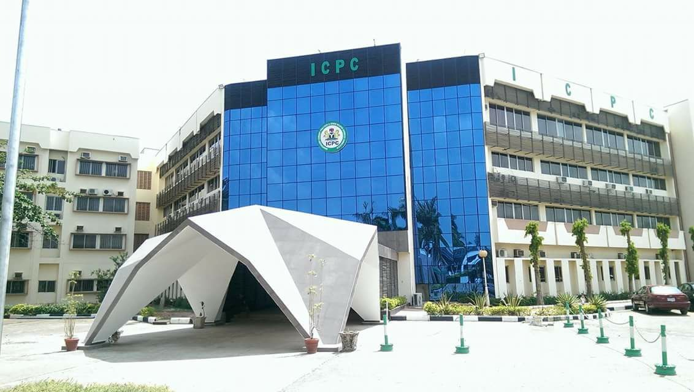

Welcome to ICPC Whistle Blower site
ICPC's mandate is to prevent, investigate, prosecute, and recover assets related to corruption and other related offenses, with the ultimate goal of promoting integrity, accountability, and good governance in Nigeria.
ICPC/GBV Whistle-Blowing-Tool

ICPC Whistle-Blower-Tool